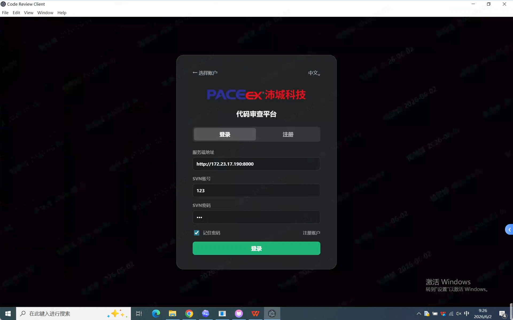
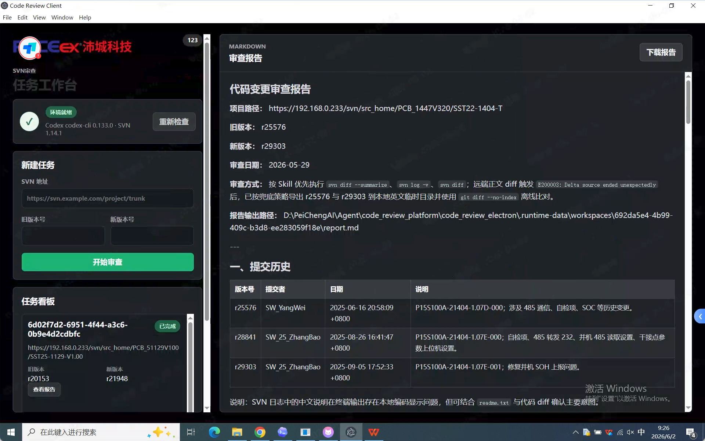
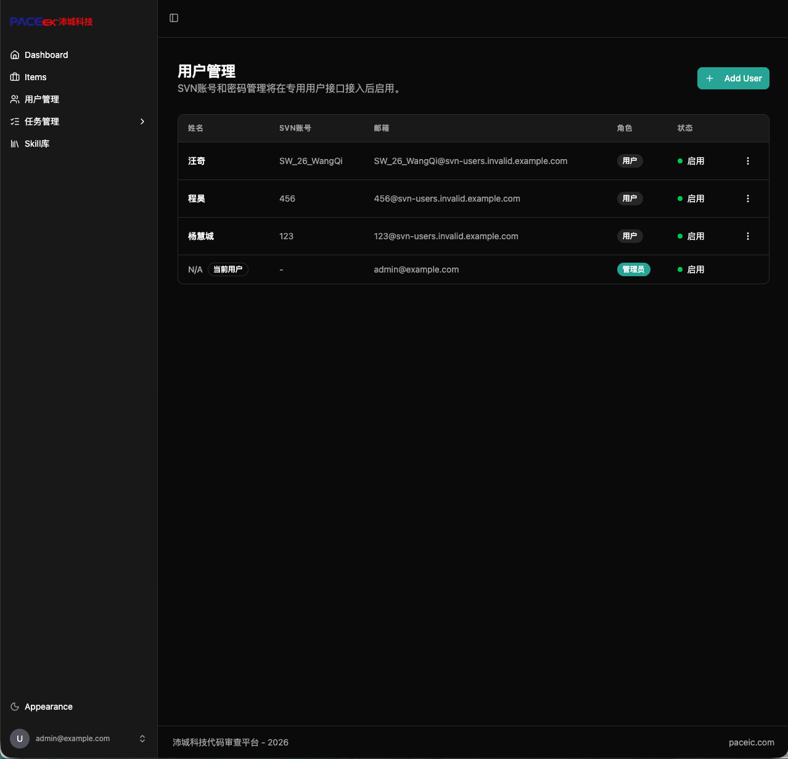
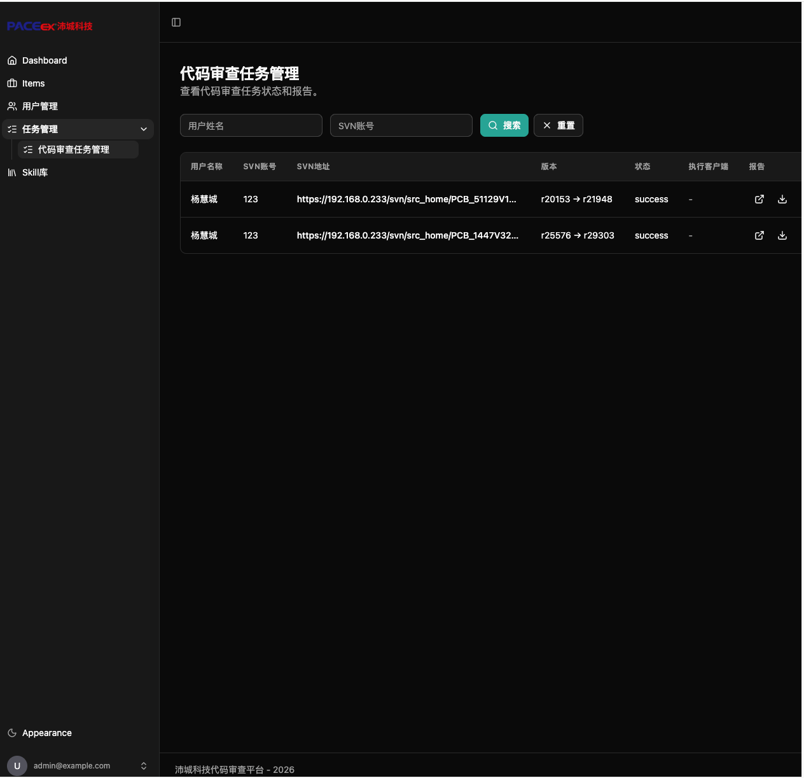

试点中内部平台
代码审查平台
代码审查平台是软件部试点中的内部代码审查辅助平台，用于在代码提交、合并或评审前，对代码变更进行初步检查和风险提示。平台帮助研发人员提升自查效率，减少明显规范问题、潜在缺陷和测试遗漏。后续代码审查平台会根据试点反馈进行更新推送。
在提交或合并前识别代码规范、逻辑风险、异常处理和边界条件问题。
输出问题说明和修改建议，帮助研发人员快速定位需要关注的代码位置。
通过看板查看用户、任务和使用情况，支撑试点推广和平台运营分析。
适用对象
平台面向研发提效和代码质量提升场景建设，不要求普通用户自行部署服务。
| 使用对象 | 可以使用什么 | 使用价值 |
|---|---|---|
| 研发人员 | 本地代码审查、审查结果查看 | 提交前发现问题，提升自查效率 |
| 项目负责人 | 团队使用情况、问题反馈情况 | 了解平台覆盖和质量改进情况 |
| 测试人员 | 代码变更审查结果、风险提示 | 辅助识别重点测试范围 |
| 平台管理员 | 使用人员、使用次数、任务记录 | 支撑平台运营、推广和维护 |
功能展示
用户打开代码审查客户端后，选择项目目录、代码文件或代码变更内容发起审查。
平台展示识别出的主要问题、风险说明和修改建议，用户可结合项目实际判断是否采纳。
在提交、合并或评审前进行辅助检查，重点关注代码规范、潜在缺陷和可维护性问题。
代码审查看板用于查看用户管理、审查任务和使用情况，支撑试点推广复盘。
平台截图
主要界面预览




访问与使用
公司内网访问：代码审查看板。客户端入口：AI代码审查客户端-v1.3.4.exe.zip。
从网站中的客户端入口获取当前试点版本，下载后在本机解压安装。
打开客户端后选择项目目录、代码文件或代码变更内容，发起辅助审查。
在公司内网环境打开看板地址，进入代码审查统计平台。
查看已接入用户、账号信息和平台使用覆盖情况。
查看审查任务记录、任务状态、使用时间和结果明细。
如发现审查结果异常、统计数据不准确或规则需要补充，可联系软件部 AI 对接人。
常见问题
| 问题 | 说明 |
|---|---|
| 无法访问看板 | 请确认是否处于公司内网环境，访问地址是否正确。 |
| 审查结果是否必须全部修改 | 审查结果用于辅助判断，用户需结合项目实际情况确认是否采纳。 |
| 统计看板能看到什么 | 主要查看用户管理、审查任务、使用时间和整体使用情况。 |
| 需要补充审查规则怎么办 | 联系软件部 AI 对接人说明项目场景、规则诉求和示例代码。 |
建设说明
代码审查平台面向研发提效和代码质量提升场景建设，当前以本地客户端和统计看板配合使用。后续可根据试点反馈持续优化审查规则、结果展示、统计维度和平台接入方式。